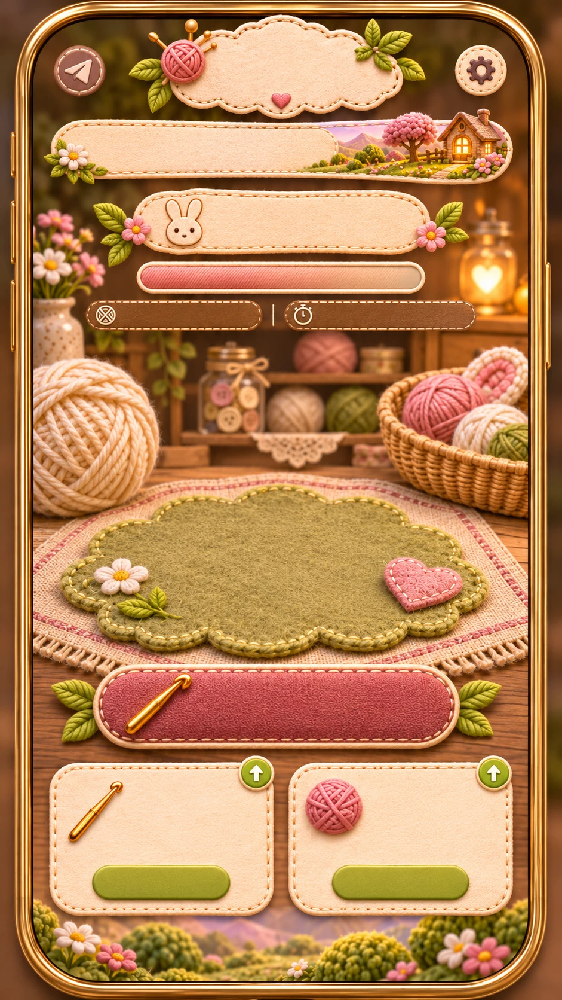
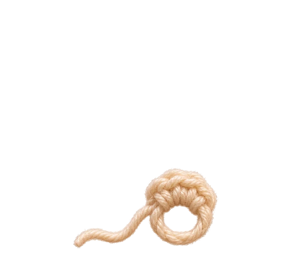

Мирна ниточке
Глава: Кроличья полянка
Вяжем кролика
0%
160 ниточек
3,0 очка/сек

Начальное кольцо
+24 очка прогресса
Кролик готов!Он поселился на твоей полянке ✿
v3.2 · художественная игровая версия · Сравнить с v3.1
Демо: просмотр стадий1 / 8